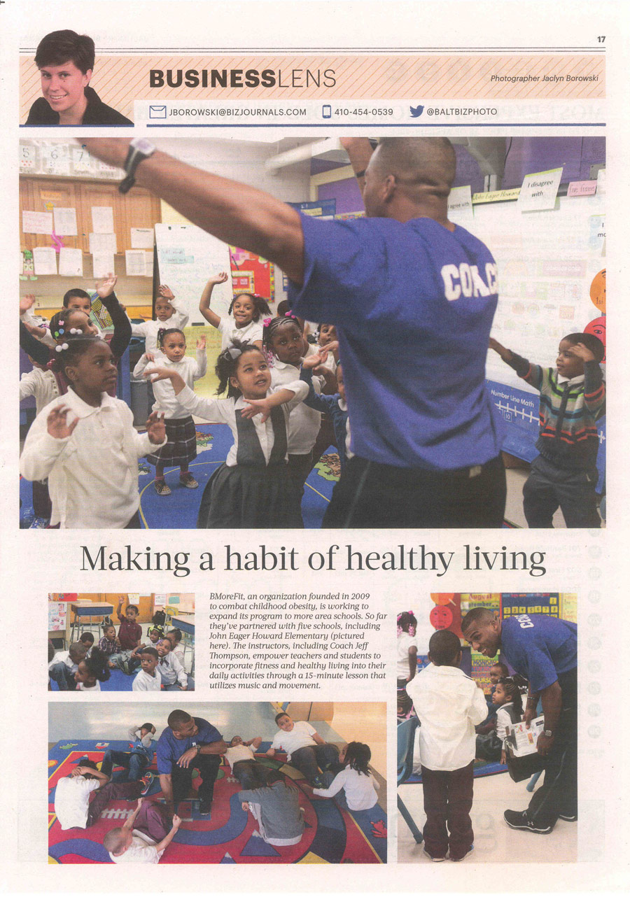

Press & Testimonials
Press
-
early 2014 BMoreFit in the Baltimore Business Journal
Making a habit of healthy living

Testimonials
BMoreFit is terrrrrific! Students learn about healthy living and use brain breaks to become more focused. What a great addition to our school!
I am a 3rd grade teacher at Holabird Academy in Baltimore City. I have been using BMoreFit exercises and brain breaks in my classroom for the last three years and I strongly believe that it makes a big difference in my student’s focus and academic success. The students love the brain breaks because they get a chance to let loose, be silly, and exercise all at the same time. The academic impact increases after these “breaks” because it re-energizes the students, gives them an outlet to expend their built up energy, and then allows them to refocus on the lesson in the classroom. They also really love to learn about the different parts of the body and their functions as well as the nutritional information that our fitness coach provides. Throughout our day, we are constantly making the connections between our core subjects and exercise and the children are realizing how fitness can benefit their learning in so many ways. The fitness cards give them an opportunity to be the “leader” for a few minutes which helps with their self-esteem and self-worth. The BMoreFit program has been integrated into everything that I do with my class, and I don't think I could live without it!
BMoreFit never fails to energize and engage students with fitness breaks and mini-lessons about health and nutrition!
The energizing breaks and website videos are FANTASTIC!
We LOVE our coaches! We wish they could come EVERYDAY!
Second grade had a math test and spelling quiz on Thursday that students had to complete in the morning before leaving for a trip. We incorporated several brain breaks into this testing block and I saw a huge improvement in student focus compared to the last time I administered an assessment. We'll definitely continue to use brain breaks!
We are THRILLED to have BMoreFit as a resource for our students at Arlington Elementary School. My children NEED to move, and BMoreFit provides the perfect outlet for their energy.
It’s time to move it, move it! The song that gets my Kindergarten class up and moving! As the country begins to take a hard look at the health problems facing our young people, they are realizing that Obesity and Diabetes are becoming prevalent in young children. That is alarming! Consequently, as we read, write and solve math problems we incorporate fitness breaks. We get moving! In Kindergarten, we have always had Psychomotor built into our schedule. With our partnership with B-More fit, we now have a more focused approach to movement. B’More fit provides music that makes you want to move, tips on the ways to move, and vocabulary words exposing students to higher level thinking skills. Our students live in an area where some parents feel it is unsafe for them to play outdoors, so the only time they get to “move” is at school. Incorporating B-More fits’ brain breaks gives the student exercise and demonstrates ways they can “move” in their home. John Eager Howards’ students love the B’More coaches and look forward to the “SUPER” brain breaks on Tuesday with Coach Jeff; and when Mrs. Vicki comes that is the icing on the cake! Our students need this grant to continue the great work that these coaches are providing to them. We want to be a school that not only excels academically, but also instills life-long healthy habits to all our scholars
 Please show your support by making a tax-deductible contribution to the Baltimore Fitness Academy, a 501(c)(3) organization.
Please show your support by making a tax-deductible contribution to the Baltimore Fitness Academy, a 501(c)(3) organization.